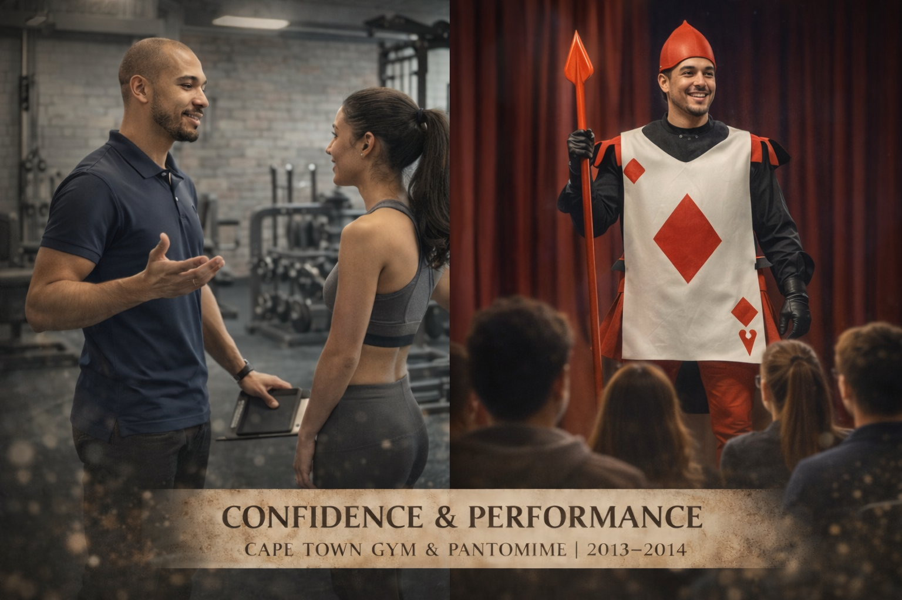
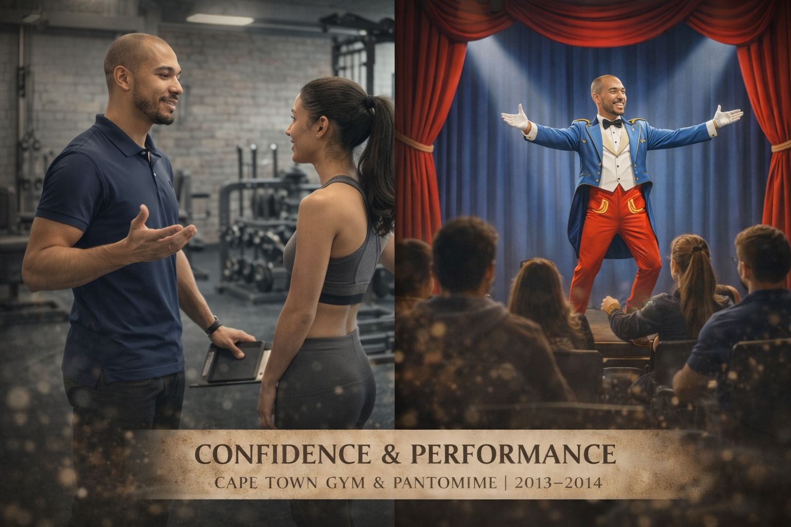
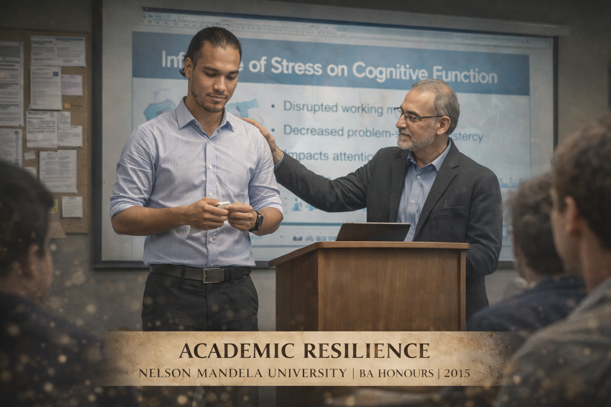

.png)
ACT I
Early foundations
The starting point: curiosity about people, communication and the systems that shape how we learn, work and relate to one another.
This is the visual story behind Knight School: not a second homepage, but the experiences and ideas that gradually converged into a practical approach to English education and learning technology.
← Back to Knight SchoolThe starting point: curiosity about people, communication and the systems that shape how we learn, work and relate to one another.
Professional environments added another layer: structure, expectations, performance, communication and the difference between knowing something and making it work in practice.


Communication is also performance: timing, confidence, audience awareness and the ability to stay present when attention is on you. Those ideas later became highly relevant to speaking instruction.

Progress is rarely linear. Learning to recover, adapt and continue became part of the philosophy that now informs how Knight School approaches confidence and learner independence.
Teaching brought the previous threads together: people, systems, performance and resilience. The classroom became a place to test which explanations and activities genuinely helped learners move forward.

Teaching abroad made communication differences visible in real time. Language learning became inseparable from context, confidence, culture and the practical demands learners face outside a textbook.

The focus deepened from delivering content to designing learning: diagnosis, deliberate practice, feedback, engagement and giving the learner a strategy they can reuse independently.

Knight School extends those ideas into digital tools, AI-assisted practice and reusable learning systems — while keeping the human communication problem at the centre.
Explore the learning labs, try the AI Studio, or start a conversation about English coaching and education projects.